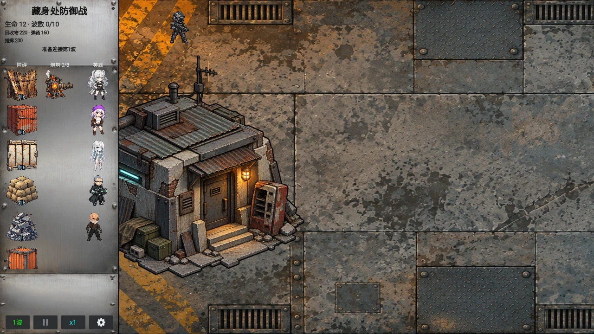

Select a screenshot to enlarge it. Screens show example inventories and progress.
Use this reference when a battlefield needs a precise answer: personal shooting, deployment limits, enemy rewards, campaign waves or Infinite growth. For the first-time sequence, start with Tower Defense; permanent upgrades belong in TD Workshops and TD Army.
- For leaks, inspect enemy type, reach and formation before increasing battle speed.
- Separate temporary battle resources, personal EXP, Army EXP and materials when checking prices.
- Open the optional wave and late-enemy tables only when needed.
Gunfire and grenades
TD shooting uses base Ability and the equipped ranged weapon’s own stored level at departure. Temporary attributes, effective ordinary-combat weapon level and other bonuses are not all copied across. Without a ranged weapon, ordinary shots deal no damage; grenades remain available. Bullets spend no battle Ammo.
The base shot interval is 0.275 real seconds, or 0.22 with an activated Expanded Ammo Case. Grenades start at 60 damage, 175 px radius and 30 real seconds recharge; EPOM researches these independently. Both timers run only in active, unpaused waves, do not accelerate at ×4, and do not give a fresh grenade on a new wave.
Ranged-weapon levels and base bullet damage
| Weapon level | Damage per bullet |
|---|---|
| 1 | 5–14 |
| 2 | 6–17 |
| 3 | 6–19 |
| 4 | 7–22 |
| 5 | 8–24 |
| 6 | 9–26 |
| 7 | 10–29 |
| 8 | 10–31 |
| 9 | 11–34 |
| 10 | 12–36 |
Aim and activated prizes
Below Ability 90, the reticle lags; at 90 that lag is removed. Physical drift continues shrinking between Ability 100 and 1000, retaining a 5% minimum of the original spread. Archery Focus reduces physical spread by another 10%, including grenade landing drift.
| Activated prize | TD effect |
|---|---|
| Gatling Feed | Allows held fire. |
| Expanded Ammo Case | +25% fire rate, rather than bullet damage. |
| Armor-Piercing Rounds | Bullets pierce targets along their line, once per target per bullet. |
| RIP | Doubles ordinary bullet damage. |
| Fragmentation Kit | +25 px grenade radius. |
Claim or activate the corresponding Neural Targeting prize first; a qualifying score alone does not activate it. See Neural Targeting for access and conditions.
Deployment and movement limits
| Category | Actual limit |
|---|---|
| Heroes | Normally one deployment per hero per attempt; retreat does not reset next wave. Emergency Phase Beacon allows full-cost redeployment from the next wave. All cost zero Salvage, with 40 Command except Chime’s 45; Ammo varies. |
| Turrets | Shared active cap 3→12. Steamshot, Rotary Cannon and Rivet Driver allow three each; others two each. Destroyed copies can be replaced at full cost if capacity permits. |
| Eight ordinary barriers | Each design has 6→33 whole-attempt uses, not an active-object cap. Destruction and new waves do not refill it; Box’s property can restore a Box use. |
| Purchased Trees / Kinetic Shield Gates | Five active each; placement requires a living deployed Terra / Glitch respectively. |
| Moving | Free, with no refund, healing or reset of cooldowns, item uses or deployment eligibility. The full footprint must fit. |
See TD Army for items, armor, specials and training; TD Workshops has all turret, barrier and capacity costs.
Reading enemy pressure
- A ground frontline does not guarantee air coverage. Leave rear ranged fire and a useful player firing position.
- Ranged and siege enemies may fire from beyond your heroes’ reach; move the formation or answer with longer range.
- Glitch targets robotic enemies, Zodiac non-robotic enemies. Their global specials affect enemies already present when triggered.
- Use actual battlefield range circles rather than the edge of character artwork.
Complete enemy base values and kill rewards (late enemies included)
HP and damage are Wave 1 base values. At wave w they are multiplied by 1.1^(w−1) and rounded, with at least one HP. Speed and base kill currencies do not grow with this multiplier. EXP is before wave and item bonuses.
Some enemies retain English names in the current battle display. The Boss column identifies Boss Hunter Emblem targets; a large-looking enemy is not automatically a tagged boss.
| Enemy | Base HP | Base damage | Base EXP | Salvage / Ammo / Command | Type | Boss |
|---|---|---|---|---|---|---|
| Karen | 36 | 3 | 3 | 6/4/5 | Non-robotic | — |
| Fast Karen | 27 | 4 | 4 | 5/6/6 | Non-robotic | — |
| Tank Karen | 105 | 5 | 9 | 12/5/9 | Non-robotic | — |
| Aislop | 18 | 2 | 1 | 3/2/3 | Non-robotic | — |
| Glitch Compliance Bot | 63 | 5 | 5 | 9/6/9 | Robotic | — |
| Mutant Crawler | 83 | 7 | 7 | 11/5/8 | Non-robotic | — |
| Compliance Grunt | 60 | 6 | 5 | 8/4/8 | Non-robotic | — |
| Karen Colossus | 525 | 30 | 40 | 45/30/35 | Non-robotic | — |
| Void Adjudicator Mech | 525 | 30 | 40 | 45/30/35 | Robotic | — |
| Boss Karen | 525 | 15 | 45 | 45/30/35 | Non-robotic | Yes |
| MechaKaren Boss | 2400 | 30 | 180 | 160/120/140 | Robotic | Yes |
| Karen Drone Boss | 1950 | 12 | 150 | 150/160/150 | Robotic | Yes |
| Synergy Siege Walker | 630 | 18 | 55 | 55/45/50 | Robotic | — |
| Drone | 30 | 2 | 2 | 7/8/6 | Robotic | — |
| Heavy Drone | 83 | 5 | 6 | 15/14/10 | Robotic | — |
| Gunner Drone | 30 | 2 | 4 | 10/11/9 | Robotic | — |
| Heavy Gunner Drone | 83 | 5 | 9 | 20/19/15 | Robotic | — |
| Retrieval Sister | 60 | 5 | 6 | 10/8/8 | Non-robotic | — |
| Threshold Warden | 195 | 10 | 16 | 24/14/18 | Non-robotic | — |
| Celebrant Guard | 90 | 7 | 9 | 14/12/12 | Non-robotic | — |
| Vigil Matron | 255 | 12 | 22 | 32/20/24 | Non-robotic | — |
| Mutant Karen | 3600 | 26 | 280 | 240/180/220 | Non-robotic | Yes |
| Synergy Enforcer | 120 | 8 | 12 | 22/20/20 | Non-robotic | — |
| Relay Hunter | 150 | 10 | 15 | 28/24/22 | Robotic | — |
| Gate Breaker | 360 | 18 | 32 | 48/36/38 | Robotic | — |
| District Reclaimer | 6200 | 42 | 420 | 360/300/320 | Robotic | Yes |
| Barracks Ravager | 240 | 16 | 24 | 24/16/18 | Non-robotic | — |
| Breach Gunner | 260 | 18 | 26 | 26/20/20 | Robotic | — |
| Suppression Drone | 210 | 12 | 21 | 20/18/16 | Robotic | — |
| Bulkhead Crusher | 640 | 30 | 55 | 45/30/36 | Robotic | — |
| Siegebreaker Prime | 10000 | 52 | 650 | 420/300/380 | Robotic | Yes |
| VOID Praetorian | 6500 | 44 | 500 | 350/250/300 | Robotic | Yes |
| VOID Mecha Dragon | 32000 | 80 | 1600 | 1000/700/800 | Robotic | Yes |
Complete campaign wave tables
These six tables cover 150 authored waves. Release windows measure approximate battle seconds until the last scheduled spawn, not a clear deadline; all remaining enemies still need defeating. Clear bonuses are additional to kill rewards. Rows without a bonus show 0 / 0 / 0.
Hideout Defense: full waves (enemy and boss names)
| Wave | Wave title | Count | Release window (s) | Enemy composition | Clear bonus: Salvage / Ammo / Command |
|---|---|---|---|---|---|
| 1 | First Contact | 22 | 18 | Aislop ×22 | 15/10/10 |
| 2 | Patrol at the Door | 26 | 22.8 | Karen ×4; Aislop ×22 | 18/12/12 |
| 3 | Scattered Probes | 30 | 27.6 | Karen ×6; Aislop ×24 | 20/14/14 |
| 4 | Quick Intruders | 34 | 26.4 | Karen ×6; Aislop ×24; Fast Karen ×4 | 22/16/16 |
| 5 | Testing the Line | 38 | 31.2 | Karen ×8; Aislop ×26; Fast Karen ×4 | 25/18/18 |
| 6 | Reinforcements | 42 | 38.4 | Karen ×10; Aislop ×26; Fast Karen ×6 | 28/20/20 |
| 7 | An Armored Visitor | 46 | 44.4 | Tank Karen ×2; Karen ×10; Aislop ×30; Fast Karen ×4 | 30/22/22 |
| 8 | Pressure at the Entrance | 50 | 50.4 | Tank Karen ×2; Karen ×12; Aislop ×30; Fast Karen ×6 | 32/24/24 |
| 9 | Hold the Hideout | 54 | 60 | Tank Karen ×2; Karen ×14; Aislop ×30; Fast Karen ×8 | 35/26/26 |
| 10 | Break the Assault | 62 | 63.6 | Tank Karen ×4; Karen ×16; Aislop ×34; Fast Karen ×8 | 0/0/0 |
Fortress Defense: full waves (enemy and boss names)
| Wave | Wave title | Count | Release window (s) | Enemy composition | Clear bonus: Salvage / Ammo / Command |
|---|---|---|---|---|---|
| 1 | Patrol Probes | 52 | 23.76 | Karen ×12; Aislop ×40 | 20/15/12 |
| 2 | Running Orders | 60 | 28.8 | Karen ×16; Aislop ×44 | 25/18/14 |
| 3 | Swift Pressure | 68 | 33.6 | Karen ×16; Fast Karen ×12; Aislop ×40 | 30/20/16 |
| 4 | Air Contact | 76 | 38.4 | Karen ×20; Fast Karen ×16; Drone ×8; Aislop ×32 | 35/28/18 |
| 5 | Colossus Advance | 84 | 48 | Karen ×20; Drone ×10; Fast Karen ×12; Karen Colossus ×2; Aislop ×40 | 45/30/22 |
| 6 | Armored Escort | 92 | 52.8 | Tank Karen ×8; Karen ×24; Fast Karen ×16; Drone ×12; Aislop ×32 | 50/35/25 |
| 7 | Hunter Teams | 100 | 57.6 | Tank Karen ×8; Karen ×20; Fast Karen ×20; Compliance Grunt ×12; Drone ×12; Aislop ×28 | 60/45/30 |
| 8 | Adjudication Order | 108 | 66 | Tank Karen ×8; Karen ×20; Fast Karen ×16; Void Adjudicator Mech ×2; Compliance Grunt ×12; Heavy Drone ×10; Aislop ×40 | 70/50/35 |
| 9 | Breach Specialists | 116 | 72 | Tank Karen ×10; Karen ×24; Fast Karen ×20; Compliance Grunt ×16; Gunner Drone ×10; Aislop ×36 | 90/65/45 |
| 10 | First Fortress Breach | 124 | 84 | Tank Karen ×12; Karen ×24; Fast Karen ×20; Compliance Grunt ×16; Boss Karen ×2; Drone ×10; Gunner Drone ×8; Aislop ×32 | 120/90/70 |
| 11 | Reinforced Mandate | 132 | 88.8 | Tank Karen ×12; Karen ×24; Fast Karen ×24; Compliance Grunt ×16; Glitch Compliance Bot ×12; Drone ×12; Heavy Drone ×8; Aislop ×24 | 0/0/0 |
| 12 | Siege Warning | 140 | 96 | Tank Karen ×12; Karen ×24; Fast Karen ×20; Compliance Grunt ×16; Mutant Crawler ×12; Gunner Drone ×12; Synergy Siege Walker ×2; Heavy Drone ×10; Aislop ×32 | 0/0/0 |
| 13 | Crossfire Doctrine | 148 | 100.8 | Tank Karen ×14; Karen ×24; Fast Karen ×24; Compliance Grunt ×20; Glitch Compliance Bot ×12; Mutant Crawler ×12; Drone ×16; Heavy Gunner Drone ×10; Aislop ×16 | 0/0/0 |
| 14 | Twin Heavy Advance | 156 | 108 | Tank Karen ×16; Karen ×24; Fast Karen ×24; Compliance Grunt ×20; Glitch Compliance Bot ×12; Karen Colossus ×2; Mutant Crawler ×12; Drone ×16; Gunner Drone ×8; Void Adjudicator Mech ×2; Aislop ×20 | 0/0/0 |
| 15 | Air Supremacy | 164 | 120 | Tank Karen ×14; Karen ×20; Fast Karen ×24; Compliance Grunt ×20; Glitch Compliance Bot ×12; Drone ×20; Mutant Crawler ×12; Heavy Drone ×16; Gunner Drone ×8; Karen Drone Boss ×2; Aislop ×16 | 0/0/0 |
| 16 | Attrition Protocol | 172 | 126 | Tank Karen ×16; Karen ×24; Fast Karen ×28; Compliance Grunt ×20; Glitch Compliance Bot ×16; Mutant Crawler ×16; Drone ×20; Heavy Drone ×16; Heavy Gunner Drone ×8; Aislop ×8 | 0/0/0 |
| 17 | Command Assault | 180 | 132 | Tank Karen ×16; Karen ×24; Fast Karen ×28; Compliance Grunt ×24; Glitch Compliance Bot ×16; Mutant Crawler ×16; Drone ×20; Heavy Drone ×12; Boss Karen ×2; Heavy Gunner Drone ×8; Synergy Siege Walker ×2; Aislop ×12 | 0/0/0 |
| 18 | Breaker Formation | 188 | 144 | Tank Karen ×20; Karen ×24; Fast Karen ×28; Compliance Grunt ×24; Glitch Compliance Bot ×16; Karen Colossus ×2; Mutant Crawler ×16; Drone ×20; Heavy Drone ×16; Void Adjudicator Mech ×2; Heavy Gunner Drone ×8; Synergy Siege Walker ×4; Aislop ×8 | 0/0/0 |
| 19 | Total Compliance | 196 | 156 | Tank Karen ×20; Karen ×24; Fast Karen ×28; Compliance Grunt ×24; Glitch Compliance Bot ×20; Mutant Crawler ×20; Drone ×20; Heavy Drone ×16; Boss Karen ×2; Gunner Drone ×8; Heavy Gunner Drone ×6; Synergy Siege Walker ×2; Karen Drone Boss ×2; Aislop ×4 | 0/0/0 |
| 20 | MechaKaren Offensive | 210 | 180 | Karen ×24; Aislop ×20; Fast Karen ×28; Drone ×20; Compliance Grunt ×24; Glitch Compliance Bot ×16; Mutant Crawler ×16; Tank Karen ×20; Heavy Drone ×16; Synergy Siege Walker ×4; Gunner Drone ×12; Heavy Gunner Drone ×8; MechaKaren Boss ×2 | 0/0/0 |
Temple Counterattack: full waves (enemy and boss names)
| Wave | Wave title | Count | Release window (s) | Enemy composition | Clear bonus: Salvage / Ammo / Command |
|---|---|---|---|---|---|
| 1 | The Closed Door | 58 | 30 | Retrieval Sister ×18; Aislop ×40 | 0/0/0 |
| 2 | The Closed Door | 62 | 34 | Retrieval Sister ×20; Karen ×16; Aislop ×26 | 0/0/0 |
| 3 | The Closed Door | 66 | 38 | Retrieval Sister ×22; Celebrant Guard ×8; Karen ×20; Aislop ×16 | 0/0/0 |
| 4 | The Closed Door | 70 | 42 | Retrieval Sister ×24; Celebrant Guard ×12; Fast Karen ×14; Karen ×20 | 0/0/0 |
| 5 | The Closed Door | 74 | 46 | Threshold Warden ×6; Retrieval Sister ×24; Celebrant Guard ×16; Karen ×28 | 0/0/0 |
| 6 | Retrieval Orders | 78 | 50 | Threshold Warden ×8; Retrieval Sister ×26; Celebrant Guard ×20; Karen ×24 | 0/0/0 |
| 7 | Retrieval Orders | 84 | 54 | Threshold Warden ×10; Retrieval Sister ×28; Celebrant Guard ×22; Fast Karen ×24 | 0/0/0 |
| 8 | Retrieval Orders | 90 | 58 | Threshold Warden ×12; Retrieval Sister ×28; Celebrant Guard ×24; Vigil Matron ×4; Karen ×22 | 0/0/0 |
| 9 | Retrieval Orders | 96 | 62 | Threshold Warden ×14; Retrieval Sister ×30; Celebrant Guard ×28; Vigil Matron ×6; Fast Karen ×18 | 0/0/0 |
| 10 | Retrieval Orders | 104 | 66 | Threshold Warden ×16; Retrieval Sister ×32; Celebrant Guard ×30; Vigil Matron ×8; Karen ×18 | 0/0/0 |
| 11 | The Hand of Grace | 112 | 70 | Threshold Warden ×18; Retrieval Sister ×32; Celebrant Guard ×34; Vigil Matron ×10; Fast Karen ×18 | 0/0/0 |
| 12 | The Hand of Grace | 120 | 74 | Threshold Warden ×20; Retrieval Sister ×34; Celebrant Guard ×38; Vigil Matron ×12; Karen ×16 | 0/0/0 |
| 13 | The Hand of Grace | 128 | 78 | Threshold Warden ×22; Retrieval Sister ×36; Celebrant Guard ×40; Vigil Matron ×14; Fast Karen ×16 | 0/0/0 |
| 14 | The Hand of Grace | 138 | 82 | Threshold Warden ×24; Retrieval Sister ×38; Celebrant Guard ×42; Vigil Matron ×16; Karen ×18 | 0/0/0 |
| 15 | The Hand of Grace | 146 | 86 | Threshold Warden ×26; Retrieval Sister ×40; Celebrant Guard ×44; Vigil Matron ×18; Tank Karen ×6; Fast Karen ×12 | 0/0/0 |
| 16 | Sanctum Reserves | 158 | 90 | Threshold Warden ×28; Retrieval Sister ×42; Celebrant Guard ×46; Vigil Matron ×20; Tank Karen ×8; Karen ×14 | 0/0/0 |
| 17 | Sanctum Reserves | 170 | 94 | Threshold Warden ×30; Retrieval Sister ×44; Celebrant Guard ×48; Vigil Matron ×22; Tank Karen ×10; Fast Karen ×16 | 0/0/0 |
| 18 | Sanctum Reserves | 180 | 98 | Threshold Warden ×32; Retrieval Sister ×46; Celebrant Guard ×50; Vigil Matron ×24; Tank Karen ×12; Karen ×16 | 0/0/0 |
| 19 | Sanctum Reserves | 190 | 102 | Threshold Warden ×34; Retrieval Sister ×50; Celebrant Guard ×52; Vigil Matron ×26; Tank Karen ×12; Fast Karen ×16 | 0/0/0 |
| 20 | Sanctum Reserves | 200 | 108 | Threshold Warden ×36; Retrieval Sister ×52; Celebrant Guard ×54; Vigil Matron ×28; Tank Karen ×14; Karen ×16 | 0/0/0 |
| 21 | The Last Blessing | 210 | 112 | Threshold Warden ×38; Retrieval Sister ×54; Celebrant Guard ×56; Vigil Matron ×30; Tank Karen ×16; Fast Karen ×16 | 0/0/0 |
| 22 | The Last Blessing | 220 | 116 | Threshold Warden ×40; Retrieval Sister ×56; Celebrant Guard ×58; Vigil Matron ×32; Tank Karen ×18; Karen ×16 | 0/0/0 |
| 23 | The Last Blessing | 230 | 120 | Threshold Warden ×42; Retrieval Sister ×58; Celebrant Guard ×60; Vigil Matron ×34; Tank Karen ×20; Fast Karen ×16 | 0/0/0 |
| 24 | The Last Blessing | 240 | 128 | Threshold Warden ×44; Retrieval Sister ×60; Celebrant Guard ×62; Vigil Matron ×36; Tank Karen ×22; Karen ×16 | 0/0/0 |
| 25 | Sanctum Matriarch | 252 | 138 | Threshold Warden ×46; Retrieval Sister ×64; Celebrant Guard ×64; Vigil Matron ×38; Tank Karen ×22; Fast Karen ×17; Mutant Karen ×1 | 0/0/0 |
Syndicate Gate Defense: full waves (enemy and boss names)
| Wave | Wave title | Count | Release window (s) | Enemy composition | Clear bonus: Salvage / Ammo / Command |
|---|---|---|---|---|---|
| 1 | Checkpoint Detail | 80 | 34 | Aislop ×24; Karen ×24; Synergy Enforcer ×18; Gunner Drone ×14 | 0/0/0 |
| 2 | Cargo Verification | 90 | 38 | Aislop ×24; Karen ×26; Synergy Enforcer ×24; Gunner Drone ×16 | 0/0/0 |
| 3 | Eyes on the Passage | 100 | 42 | Aislop ×22; Fast Karen ×24; Synergy Enforcer ×28; Relay Hunter ×12; Gunner Drone ×14 | 0/0/0 |
| 4 | Extraction Order | 110 | 46 | Karen ×24; Fast Karen ×20; Compliance Grunt ×22; Synergy Enforcer ×30; Relay Hunter ×14 | 0/0/0 |
| 5 | First Breach Team | 120 | 50 | Fast Karen ×24; Compliance Grunt ×26; Synergy Enforcer ×34; Relay Hunter ×20; Gate Breaker ×8; Tank Karen ×8 | 0/0/0 |
| 6 | Supply Interdiction | 130 | 54 | Aislop ×24; Compliance Grunt ×28; Synergy Enforcer ×34; Relay Hunter ×22; Gate Breaker ×12; Tank Karen ×10 | 0/0/0 |
| 7 | The Covered Route | 140 | 58 | Fast Karen ×28; Compliance Grunt ×28; Synergy Enforcer ×36; Relay Hunter ×26; Gate Breaker ×12; Heavy Gunner Drone ×10 | 0/0/0 |
| 8 | Garden Blockade | 150 | 62 | Mutant Crawler ×24; Fast Karen ×24; Synergy Enforcer ×40; Relay Hunter ×28; Gate Breaker ×18; Tank Karen ×16 | 0/0/0 |
| 9 | Relay Sweep | 160 | 66 | Glitch Compliance Bot ×24; Compliance Grunt ×26; Synergy Enforcer ×38; Relay Hunter ×36; Gate Breaker ×20; Heavy Gunner Drone ×16 | 0/0/0 |
| 10 | Containment Authority | 170 | 72 | Compliance Grunt ×30; Synergy Enforcer ×40; Relay Hunter ×32; Gate Breaker ×24; Tank Karen ×24; Boss Karen ×2; Fast Karen ×18 | 0/0/0 |
| 11 | No Safe Deliveries | 180 | 76 | Fast Karen ×30; Synergy Enforcer ×42; Relay Hunter ×34; Gate Breaker ×26; Tank Karen ×28; Synergy Siege Walker ×4; Compliance Grunt ×16 | 0/0/0 |
| 12 | Enforcement Reserves | 190 | 80 | Compliance Grunt ×32; Synergy Enforcer ×44; Relay Hunter ×36; Gate Breaker ×28; Tank Karen ×26; Synergy Siege Walker ×6; Glitch Compliance Bot ×18 | 0/0/0 |
| 13 | The Freight Turn | 200 | 84 | Fast Karen ×32; Synergy Enforcer ×46; Relay Hunter ×38; Gate Breaker ×30; Heavy Gunner Drone ×24; Synergy Siege Walker ×6; Mutant Crawler ×24 | 0/0/0 |
| 14 | Seizure Formation | 210 | 88 | Compliance Grunt ×34; Synergy Enforcer ×48; Relay Hunter ×40; Gate Breaker ×32; Tank Karen ×30; Synergy Siege Walker ×8; Void Adjudicator Mech ×2; Fast Karen ×16 | 0/0/0 |
| 15 | Corporate Judgment | 220 | 94 | Synergy Enforcer ×50; Relay Hunter ×42; Gate Breaker ×34; Tank Karen ×32; Synergy Siege Walker ×8; Void Adjudicator Mech ×4; Karen Drone Boss ×1; Compliance Grunt ×49 | 0/0/0 |
| 16 | Cut the Service Line | 230 | 98 | Fast Karen ×36; Synergy Enforcer ×52; Relay Hunter ×44; Gate Breaker ×36; Heavy Gunner Drone ×28; Synergy Siege Walker ×10; Void Adjudicator Mech ×4; Compliance Grunt ×20 | 0/0/0 |
| 17 | Permanent Checkpoint | 240 | 102 | Compliance Grunt ×38; Synergy Enforcer ×54; Relay Hunter ×46; Gate Breaker ×38; Tank Karen ×32; Synergy Siege Walker ×12; Void Adjudicator Mech ×6; Fast Karen ×14 | 0/0/0 |
| 18 | Breach the Shutters | 250 | 106 | Synergy Enforcer ×56; Relay Hunter ×48; Gate Breaker ×40; Tank Karen ×36; Synergy Siege Walker ×12; Void Adjudicator Mech ×6; Mutant Crawler ×46; Boss Karen ×6 | 0/0/0 |
| 19 | Allocation Override | 260 | 110 | Synergy Enforcer ×58; Relay Hunter ×50; Gate Breaker ×42; Compliance Grunt ×40; Synergy Siege Walker ×14; Void Adjudicator Mech ×6; Heavy Gunner Drone ×36; Fast Karen ×14 | 0/0/0 |
| 20 | Heavy Extraction | 270 | 116 | Synergy Enforcer ×60; Relay Hunter ×52; Gate Breaker ×44; Tank Karen ×40; Synergy Siege Walker ×14; Void Adjudicator Mech ×8; MechaKaren Boss ×2; Compliance Grunt ×50 | 0/0/0 |
| 21 | No Way Home | 280 | 120 | Synergy Enforcer ×64; Relay Hunter ×54; Gate Breaker ×46; Compliance Grunt ×44; Synergy Siege Walker ×16; Void Adjudicator Mech ×8; Fast Karen ×48 | 0/0/0 |
| 22 | District Lockdown | 290 | 124 | Synergy Enforcer ×66; Relay Hunter ×56; Gate Breaker ×48; Tank Karen ×44; Synergy Siege Walker ×18; Void Adjudicator Mech ×8; Heavy Gunner Drone ×50 | 0/0/0 |
| 23 | The Last Delivery | 300 | 130 | Synergy Enforcer ×68; Relay Hunter ×58; Gate Breaker ×50; Compliance Grunt ×48; Synergy Siege Walker ×18; Void Adjudicator Mech ×10; Fast Karen ×46; Boss Karen ×2 | 0/0/0 |
| 24 | Hold Their Home | 310 | 138 | Synergy Enforcer ×70; Relay Hunter ×60; Gate Breaker ×52; Tank Karen ×48; Synergy Siege Walker ×20; Void Adjudicator Mech ×10; Karen Drone Boss ×2; Compliance Grunt ×48 | 0/0/0 |
| 25 | District Reclaimer | 330 | 150 | Synergy Enforcer ×76; Relay Hunter ×64; Gate Breaker ×56; Tank Karen ×48; Synergy Siege Walker ×20; Void Adjudicator Mech ×12; Compliance Grunt ×53; District Reclaimer ×1 | 0/0/0 |
Fortress Interior Defense: full waves (enemy and boss names)
| Wave | Wave title | Count | Release window (s) | Enemy composition | Clear bonus: Salvage / Ammo / Command |
|---|---|---|---|---|---|
| 1 | Hold the Bulkhead | 110 | 32 | Barracks Ravager ×30; Fast Karen ×30; Synergy Enforcer ×30; Aislop ×20 | 0/0/0 |
| 2 | Hold the Bulkhead | 120 | 36 | Barracks Ravager ×35; Breach Gunner ×15; Fast Karen ×30; Synergy Enforcer ×30; Aislop ×10 | 0/0/0 |
| 3 | Hold the Bulkhead | 130 | 40 | Barracks Ravager ×40; Breach Gunner ×25; Karen ×30; Synergy Enforcer ×35 | 0/0/0 |
| 4 | Hold the Bulkhead | 140 | 44 | Barracks Ravager ×40; Breach Gunner ×30; Suppression Drone ×10; Fast Karen ×30; Synergy Enforcer ×30 | 0/0/0 |
| 5 | Hold the Bulkhead | 150 | 48 | Barracks Ravager ×45; Breach Gunner ×35; Suppression Drone ×15; Tank Karen ×10; Synergy Enforcer ×45 | 0/0/0 |
| 6 | Barracks Sweep | 160 | 52 | Barracks Ravager ×50; Breach Gunner ×40; Suppression Drone ×20; Fast Karen ×35; Synergy Enforcer ×15 | 0/0/0 |
| 7 | Barracks Sweep | 170 | 56 | Barracks Ravager ×50; Breach Gunner ×40; Suppression Drone ×25; Bulkhead Crusher ×10; Fast Karen ×30; Relay Hunter ×15 | 0/0/0 |
| 8 | Barracks Sweep | 180 | 60 | Barracks Ravager ×55; Breach Gunner ×45; Suppression Drone ×30; Bulkhead Crusher ×15; Tank Karen ×15; Relay Hunter ×20 | 0/0/0 |
| 9 | Barracks Sweep | 190 | 64 | Barracks Ravager ×60; Breach Gunner ×50; Suppression Drone ×30; Bulkhead Crusher ×20; Fast Karen ×30 | 0/0/0 |
| 10 | Barracks Sweep | 200 | 68 | Barracks Ravager ×65; Breach Gunner ×50; Suppression Drone ×35; Bulkhead Crusher ×25; Gate Breaker ×10; Relay Hunter ×15 | 0/0/0 |
| 11 | Suppression Line | 210 | 72 | Barracks Ravager ×65; Breach Gunner ×55; Suppression Drone ×40; Bulkhead Crusher ×25; Relay Hunter ×25 | 0/0/0 |
| 12 | Suppression Line | 220 | 76 | Barracks Ravager ×70; Breach Gunner ×60; Suppression Drone ×45; Bulkhead Crusher ×25; Fast Karen ×20 | 0/0/0 |
| 13 | Suppression Line | 230 | 80 | Barracks Ravager ×75; Breach Gunner ×65; Suppression Drone ×45; Bulkhead Crusher ×30; Gate Breaker ×15 | 0/0/0 |
| 14 | Suppression Line | 240 | 84 | Barracks Ravager ×80; Breach Gunner ×65; Suppression Drone ×50; Bulkhead Crusher ×30; Relay Hunter ×15 | 0/0/0 |
| 15 | Suppression Line | 250 | 88 | Barracks Ravager ×80; Breach Gunner ×70; Suppression Drone ×50; Bulkhead Crusher ×35; Tank Karen ×15 | 0/0/0 |
| 16 | Steel and Teeth | 260 | 92 | Barracks Ravager ×90; Breach Gunner ×75; Suppression Drone ×50; Bulkhead Crusher ×35; Gate Breaker ×10 | 0/0/0 |
| 17 | Steel and Teeth | 270 | 96 | Barracks Ravager ×90; Breach Gunner ×80; Suppression Drone ×55; Bulkhead Crusher ×35; Fast Karen ×10 | 0/0/0 |
| 18 | Steel and Teeth | 280 | 100 | Barracks Ravager ×95; Breach Gunner ×80; Suppression Drone ×55; Bulkhead Crusher ×40; Relay Hunter ×10 | 0/0/0 |
| 19 | Steel and Teeth | 290 | 104 | Barracks Ravager ×100; Breach Gunner ×85; Suppression Drone ×55; Bulkhead Crusher ×40; Gate Breaker ×10 | 0/0/0 |
| 20 | Steel and Teeth | 300 | 108 | Barracks Ravager ×105; Breach Gunner ×85; Suppression Drone ×60; Bulkhead Crusher ×40; Tank Karen ×10 | 0/0/0 |
| 21 | Break the Siege | 320 | 114 | Barracks Ravager ×110; Breach Gunner ×90; Suppression Drone ×60; Bulkhead Crusher ×45; Gate Breaker ×15 | 0/0/0 |
| 22 | Break the Siege | 340 | 120 | Barracks Ravager ×115; Breach Gunner ×95; Suppression Drone ×65; Bulkhead Crusher ×45; Relay Hunter ×20 | 0/0/0 |
| 23 | Break the Siege | 360 | 126 | Barracks Ravager ×120; Breach Gunner ×100; Suppression Drone ×65; Bulkhead Crusher ×50; Gate Breaker ×25 | 0/0/0 |
| 24 | Break the Siege | 390 | 134 | Barracks Ravager ×130; Breach Gunner ×110; Suppression Drone ×70; Bulkhead Crusher ×55; Relay Hunter ×25 | 0/0/0 |
| 25 | Break the Siege | 420 | 142 | Barracks Ravager ×140; Breach Gunner ×115; Suppression Drone ×75; Bulkhead Crusher ×60; Gate Breaker ×30 | 0/0/0 |
| 26 | The Last Corridor | 440 | 148 | Barracks Ravager ×145; Breach Gunner ×125; Suppression Drone ×80; Bulkhead Crusher ×65; Tank Karen ×25 | 0/0/0 |
| 27 | The Last Corridor | 460 | 154 | Barracks Ravager ×155; Breach Gunner ×135; Suppression Drone ×85; Bulkhead Crusher ×65; Relay Hunter ×20 | 0/0/0 |
| 28 | The Last Corridor | 480 | 160 | Barracks Ravager ×165; Breach Gunner ×140; Suppression Drone ×90; Bulkhead Crusher ×70; Gate Breaker ×15 | 0/0/0 |
| 29 | The Last Corridor | 510 | 166 | Barracks Ravager ×175; Breach Gunner ×145; Suppression Drone ×95; Bulkhead Crusher ×75; Tank Karen ×20 | 0/0/0 |
| 30 | Siegebreaker Prime | 540 | 174 | Barracks Ravager ×180; Breach Gunner ×150; Suppression Drone ×100; Bulkhead Crusher ×80; Gate Breaker ×29; Siegebreaker Prime ×1 | 0/0/0 |
VOID Final Assault: full waves (enemy and boss names)
| Wave | Wave title | Count | Release window (s) | Enemy composition | Clear bonus: Salvage / Ammo / Command |
|---|---|---|---|---|---|
| 1 | Sealed Approach | 130 | 36 | Synergy Enforcer ×39; Breach Gunner ×39; Barracks Ravager ×32; Relay Hunter ×20 | 0/0/0 |
| 2 | Sealed Approach | 145 | 40 | Synergy Enforcer ×43; Breach Gunner ×43; Barracks Ravager ×36; Relay Hunter ×23 | 0/0/0 |
| 3 | Sealed Approach | 160 | 44 | Synergy Enforcer ×48; Breach Gunner ×48; Barracks Ravager ×40; Relay Hunter ×24 | 0/0/0 |
| 4 | Sealed Approach | 175 | 48 | Synergy Enforcer ×52; Breach Gunner ×52; Barracks Ravager ×43; Relay Hunter ×28 | 0/0/0 |
| 5 | Sealed Approach | 190 | 52 | Synergy Enforcer ×57; Breach Gunner ×57; Barracks Ravager ×47; Relay Hunter ×29 | 0/0/0 |
| 6 | Security Recall | 205 | 56 | Breach Gunner ×61; Suppression Drone ×30; Synergy Enforcer ×51; Relay Hunter ×41; Gate Breaker ×22 | 0/0/0 |
| 7 | Security Recall | 220 | 60 | Breach Gunner ×66; Suppression Drone ×33; Synergy Enforcer ×55; Relay Hunter ×44; Gate Breaker ×22 | 0/0/0 |
| 8 | Security Recall | 235 | 64 | Breach Gunner ×70; Suppression Drone ×35; Synergy Enforcer ×58; Relay Hunter ×47; Gate Breaker ×25 | 0/0/0 |
| 9 | Security Recall | 250 | 68 | Breach Gunner ×75; Suppression Drone ×37; Synergy Enforcer ×62; Relay Hunter ×50; Gate Breaker ×26 | 0/0/0 |
| 10 | Security Recall | 265 | 72 | Breach Gunner ×79; Suppression Drone ×39; Synergy Enforcer ×66; Relay Hunter ×53; Gate Breaker ×28 | 0/0/0 |
| 11 | Response Corridor | 280 | 76 | Breach Gunner ×70; Suppression Drone ×56; Barracks Ravager ×70; Gate Breaker ×42; Bulkhead Crusher ×42 | 0/0/0 |
| 12 | Response Corridor | 295 | 80 | Breach Gunner ×73; Suppression Drone ×59; Barracks Ravager ×73; Gate Breaker ×44; Bulkhead Crusher ×46 | 0/0/0 |
| 13 | Response Corridor | 310 | 84 | Breach Gunner ×77; Suppression Drone ×62; Barracks Ravager ×77; Gate Breaker ×46; Bulkhead Crusher ×48 | 0/0/0 |
| 14 | Response Corridor | 325 | 88 | Breach Gunner ×81; Suppression Drone ×65; Barracks Ravager ×81; Gate Breaker ×48; Bulkhead Crusher ×50 | 0/0/0 |
| 15 | Response Corridor | 340 | 92 | Breach Gunner ×85; Suppression Drone ×68; Barracks Ravager ×85; Gate Breaker ×51; Bulkhead Crusher ×51 | 0/0/0 |
| 16 | Crimson Lockdown | 355 | 96 | Breach Gunner ×88; Suppression Drone ×71; Barracks Ravager ×71; Bulkhead Crusher ×71; Void Adjudicator Mech ×17; Relay Hunter ×37 | 0/0/0 |
| 17 | Crimson Lockdown | 370 | 100 | Breach Gunner ×92; Suppression Drone ×74; Barracks Ravager ×74; Bulkhead Crusher ×74; Void Adjudicator Mech ×18; Relay Hunter ×38 | 0/0/0 |
| 18 | Crimson Lockdown | 385 | 104 | Breach Gunner ×96; Suppression Drone ×77; Barracks Ravager ×77; Bulkhead Crusher ×77; Void Adjudicator Mech ×19; Relay Hunter ×39 | 0/0/0 |
| 19 | Crimson Lockdown | 400 | 108 | Breach Gunner ×100; Suppression Drone ×80; Barracks Ravager ×80; Bulkhead Crusher ×80; Void Adjudicator Mech ×20; Relay Hunter ×40 | 0/0/0 |
| 20 | VOID Praetorian | 420 | 114 | Breach Gunner ×104; Suppression Drone ×83; Barracks Ravager ×83; Bulkhead Crusher ×83; Void Adjudicator Mech ×20; Relay Hunter ×46; VOID Praetorian ×1 | 0/0/0 |
| 21 | Break the Inner Line | 440 | 120 | Breach Gunner ×110; Suppression Drone ×88; Barracks Ravager ×88; Bulkhead Crusher ×88; Gate Breaker ×44; Synergy Siege Walker ×22 | 0/0/0 |
| 22 | Break the Inner Line | 460 | 126 | Breach Gunner ×115; Suppression Drone ×92; Barracks Ravager ×92; Bulkhead Crusher ×92; Gate Breaker ×46; Synergy Siege Walker ×23 | 0/0/0 |
| 23 | Break the Inner Line | 480 | 132 | Breach Gunner ×120; Suppression Drone ×96; Barracks Ravager ×96; Bulkhead Crusher ×96; Gate Breaker ×48; Synergy Siege Walker ×24 | 0/0/0 |
| 24 | Break the Inner Line | 500 | 138 | Breach Gunner ×125; Suppression Drone ×100; Barracks Ravager ×100; Bulkhead Crusher ×100; Gate Breaker ×50; Synergy Siege Walker ×25 | 0/0/0 |
| 25 | Break the Inner Line | 520 | 144 | Breach Gunner ×130; Suppression Drone ×104; Barracks Ravager ×104; Bulkhead Crusher ×104; Gate Breaker ×52; Synergy Siege Walker ×26 | 0/0/0 |
| 26 | Reactor Guard | 540 | 150 | Breach Gunner ×135; Suppression Drone ×108; Barracks Ravager ×108; Bulkhead Crusher ×108; Void Adjudicator Mech ×27; Gate Breaker ×54 | 0/0/0 |
| 27 | Reactor Guard | 560 | 156 | Breach Gunner ×140; Suppression Drone ×112; Barracks Ravager ×112; Bulkhead Crusher ×112; Void Adjudicator Mech ×28; Gate Breaker ×56 | 0/0/0 |
| 28 | Reactor Guard | 580 | 162 | Breach Gunner ×145; Suppression Drone ×116; Barracks Ravager ×116; Bulkhead Crusher ×116; Void Adjudicator Mech ×29; Gate Breaker ×58 | 0/0/0 |
| 29 | Reactor Guard | 600 | 168 | Breach Gunner ×150; Suppression Drone ×120; Barracks Ravager ×120; Bulkhead Crusher ×120; Void Adjudicator Mech ×30; Gate Breaker ×60 | 0/0/0 |
| 30 | Reactor Guard | 620 | 174 | Breach Gunner ×155; Suppression Drone ×124; Barracks Ravager ×124; Bulkhead Crusher ×124; Void Adjudicator Mech ×31; Gate Breaker ×62 | 0/0/0 |
| 31 | No Quiet Way Through | 640 | 180 | Breach Gunner ×160; Suppression Drone ×128; Barracks Ravager ×96; Bulkhead Crusher ×128; Synergy Siege Walker ×64; Relay Hunter ×64 | 0/0/0 |
| 32 | No Quiet Way Through | 660 | 186 | Breach Gunner ×165; Suppression Drone ×132; Barracks Ravager ×99; Bulkhead Crusher ×132; Synergy Siege Walker ×66; Relay Hunter ×66 | 0/0/0 |
| 33 | No Quiet Way Through | 680 | 192 | Breach Gunner ×170; Suppression Drone ×136; Barracks Ravager ×102; Bulkhead Crusher ×136; Synergy Siege Walker ×68; Relay Hunter ×68 | 0/0/0 |
| 34 | No Quiet Way Through | 700 | 198 | Breach Gunner ×175; Suppression Drone ×140; Barracks Ravager ×105; Bulkhead Crusher ×140; Synergy Siege Walker ×70; Relay Hunter ×70 | 0/0/0 |
| 35 | No Quiet Way Through | 720 | 204 | Breach Gunner ×180; Suppression Drone ×144; Barracks Ravager ×108; Bulkhead Crusher ×144; Synergy Siege Walker ×72; Relay Hunter ×72 | 0/0/0 |
| 36 | The Last Defense | 735 | 208 | Breach Gunner ×183; Suppression Drone ×147; Barracks Ravager ×110; Bulkhead Crusher ×147; Gate Breaker ×73; Void Adjudicator Mech ×36; Synergy Siege Walker ×39 | 0/0/0 |
| 37 | The Last Defense | 750 | 212 | Breach Gunner ×187; Suppression Drone ×150; Barracks Ravager ×112; Bulkhead Crusher ×150; Gate Breaker ×75; Void Adjudicator Mech ×37; Synergy Siege Walker ×39 | 0/0/0 |
| 38 | The Last Defense | 760 | 216 | Breach Gunner ×190; Suppression Drone ×152; Barracks Ravager ×114; Bulkhead Crusher ×152; Gate Breaker ×76; Void Adjudicator Mech ×38; Synergy Siege Walker ×38 | 0/0/0 |
| 39 | The Last Defense | 770 | 218 | Breach Gunner ×192; Suppression Drone ×154; Barracks Ravager ×115; Bulkhead Crusher ×154; Gate Breaker ×77; Void Adjudicator Mech ×38; Synergy Siege Walker ×40 | 0/0/0 |
| 40 | VOID Mecha Dragon | 780 | 220 | Breach Gunner ×194; Suppression Drone ×155; Barracks Ravager ×116; Bulkhead Crusher ×155; Gate Breaker ×77; Void Adjudicator Mech ×38; Synergy Siege Walker ×44; VOID Mecha Dragon ×1 | 0/0/0 |
How Infinite grows
After actually clearing a map, the same entry launches its Infinite mode. Each attempt starts at Wave 1. Authored campaign templates loop, but the actual wave number, enemy strength and reward multiplier keep rising.
Growth formulas, counts and bonus bosses
| Element | Rule |
|---|---|
| HP and damage | In both campaign and Infinite: base × 1.1^(actual wave − 1), without a fixed growth cap. |
| EXP multiplier | Infinite only: 100% + 25% × floor((actual wave − 1) / 20): 100% on Waves 1–20, 125% on 21–40, 150% on 41–60, continuing upward. |
| Hideout / Fortress template copies | Two on Waves 1–20, three on 21–30, then one more every ten waves. |
| Temple / Syndicate copies | Two on Waves 1–25, three on 26–35, then one more every ten waves. |
| Fortress interior copies | Two on Waves 1–30, three on 31–40, then one more every ten waves. |
| Late assault copies | Two on Waves 1–40, three on 41–50, then one more every ten waves. |
| Extra reinforcements | Each actual wave adds 10 + wave number map-specific regular reinforcements and one elite. Hideout adds only that many Aislop, without an extra elite. |
| Bonus bosses | One additional map boss on Waves 45, 50, 55… appears ten seconds after wave start. Bosses already in the repeated template remain. |
| Template clear bonus | Paid once per actual wave, not once per repeated copy. |
Repeated templates release continuously, and added reinforcements overlap them rather than waiting for earlier groups to die. Late pressure comes from both stronger enemies and simultaneous numbers.
EXP, Clout and Chronium
Final blows determine EXP ownership: heroes normally receive personal EXP, while player, turret and reflected-barrier kills receive Army EXP. Salvage Transponder splits its wearer’s earnings. Training Data Chip and Veteran’s Memory Core add 20% / 60% personal kill EXP, rounded up per kill after wave and item multipliers; zero-EXP enemies remain zero. Boss Hunter Emblem adds 25% kill EXP for eligible tagged bosses.
Every ten fully cleared waves gives +1 Leadership if the skill is already learned. Infinite additionally grants 1 / 2 / 3 / 3 / 4 / 5 Clout per ten waves on Hideout, Fortress, Temple, Syndicate, fortress interior and late assault respectively. Leadership and Infinite Clout milestones restart each new attempt and have no fixed lifetime cap.
After Story Beat 65, Cid introduces Chronium and gives one whole piece. Thereafter, an Infinite attempt with at least 30 fully cleared waves has a 25% chance to yield one whole Chronium through a verified normal return, defeat settlement or valid bank. Merely reaching Wave 30 is insufficient. The roll is fixed once per attempt; repeated loading or banking the same earnings does not reroll or duplicate it. Cid spends ten pieces per Defenses level, and Chronium also supports permanent mining unlocks.
Normal return retains verified earnings but does not save a resumable battlefield. See Tower Defense for banking, defeat and returning.
这页用于查塔防中的具体问题：亲自射击、部署上限、敌人奖励、战役波表和无限模式增长。第一次游玩先看塔防指南；永久升级分别见 TD工坊与 TD军队。
- 漏怪先查敌人类型、射程与阵型，不要只提高战斗速度。
- 查价格时分清战场临时资源、个人经验、军队经验和材料。
- 波表与后期敌人放在折叠区，按需要展开。
枪械与手榴弹
塔防射击读取出发时的基础能力和已装备远程武器自身的等级。普通战斗里的临时属性、有效武器等级或其他加成不会全部照搬。未装备远程武器时，普通枪击没有伤害；仍可使用手榴弹。枪弹不消耗战场弹药。
枪击基础间隔为 0.275 实际秒；已激活扩容弹药箱后为 0.22 秒。手榴弹基础伤害 60、半径 175 像素、冷却 30 实际秒，EPOM 的三个研发分别提高这些数值。两者都只在未暂停的活动波次计时，不因 ×4 加速变快，也不会在换波时自动刷新手榴弹冷却。
远程武器等级与基础枪击伤害
| 武器等级 | 每发伤害 |
|---|---|
| 1 | 5–14 |
| 2 | 6–17 |
| 3 | 6–19 |
| 4 | 7–22 |
| 5 | 8–24 |
| 6 | 9–26 |
| 7 | 10–29 |
| 8 | 10–31 |
| 9 | 11–34 |
| 10 | 12–36 |
瞄准与已激活奖品
能力低于 90 时准星有跟随延迟，90 起取消延迟；弹道漂移在能力 100→1000 之间继续缩小，最终仍保留初始漂移的 5%。弓术专注让物理漂移再降低 10%，也作用于手榴弹落点。
| 已激活奖品 | 塔防效果 |
|---|---|
| 加特林供弹器 | 可按住射击。 |
| 扩容弹药箱 | 射速 +25%，不是每发伤害 +25%。 |
| 穿甲弹 | 子弹贯穿直线上各个目标，每个目标一发一次。 |
| RIP | 普通子弹伤害加倍。 |
| 破片套件 | 手榴弹半径另加 25 像素。 |
要先在神经瞄准中领取／激活对应奖品；只达到分数并不等于已经启用。入口和条件见 神经瞄准指南。

部署与移动限制
| 类别 | 实际限制 |
|---|---|
| 英雄 | 通常每位每场一次；撤退后不能换波再放。紧急相位信标从下一波起允许再次付全价部署。所有英雄回收物费为 0；除 Chime 指挥费 45 外，其余为 40；弹药费用因人而异。 |
| 炮塔 | 共享同时在场上限为 3→12。蒸汽炮、旋转机炮、铆钉炮各最多三座；其他设计各两座。被摧毁后可付费补放，需有空名额。 |
| 八种常规屏障 | 每种各有 6→33 次整场次数；不是同时在场上限。破坏和换波都不补满；箱子的特殊效果可恢复一次箱子次数。 |
| 付费树木／动能护盾门 | 各最多五个同时在场，放置时分别要求 Terra／Glitch 存活且已部署。 |
| 移动 | 免费，不退钱、不治疗、不重置冷却、物品触发次数或部署资格；目标空位必须能容纳完整占地。 |
读懂敌人的压力
- 近战前线挡住了地面单位，不代表飞行单位也被拦住。为后方留远程火力与手动射击位置。
- 远程敌人和攻城单位可能在你的英雄射程之外开火；移动阵型或用更远射程回应。
- Glitch 针对机械敌人，Zodiac 针对非机械敌人；两者的全场特殊技能只命中当时已经出现的敌人。
- 特殊效果的范围看实际战场圈，不看角色立绘边缘。
完整敌人基础数值与击杀奖励（含后期敌人）
表中生命与伤害是第一波基础值；第 w 波乘 1.1^(w−1) 后取整，生命至少 1。速度与基础击杀资源不随这个倍率成长。经验列是倍率与物品加成前的基础经验。
部分敌人当前在战场沿用英文名，表格也按原显示保留；首领栏表示首领猎手徽章适用的对象，不能只看名字是否巨大或像首领。
| 敌人 | 基础生命 | 基础伤害 | 基础经验 | 回收物／弹药／指挥 | 类型 | 首领 |
|---|---|---|---|---|---|---|
| Karen | 36 | 3 | 3 | 6/4/5 | 非机械 | — |
| Fast Karen | 27 | 4 | 4 | 5/6/6 | 非机械 | — |
| Karen坦克 | 105 | 5 | 9 | 12/5/9 | 非机械 | — |
| Aislop | 18 | 2 | 1 | 3/2/3 | 非机械 | — |
| Glitch Compliance Bot | 63 | 5 | 5 | 9/6/9 | 机械 | — |
| 变异爬行者 | 83 | 7 | 7 | 11/5/8 | 非机械 | — |
| Compliance Grunt | 60 | 6 | 5 | 8/4/8 | 非机械 | — |
| Karen Colossus | 525 | 30 | 40 | 45/30/35 | 非机械 | — |
| Void Adjudicator Mech | 525 | 30 | 40 | 45/30/35 | 机械 | — |
| Boss Karen | 525 | 15 | 45 | 45/30/35 | 非机械 | 是 |
| MechaKaren Boss | 2400 | 30 | 180 | 160/120/140 | 机械 | 是 |
| Karen Drone Boss | 1950 | 12 | 150 | 150/160/150 | 机械 | 是 |
| Synergy Siege Walker | 630 | 18 | 55 | 55/45/50 | 机械 | — |
| Drone | 30 | 2 | 2 | 7/8/6 | 机械 | — |
| Heavy Drone | 83 | 5 | 6 | 15/14/10 | 机械 | — |
| Gunner Drone | 30 | 2 | 4 | 10/11/9 | 机械 | — |
| Heavy Gunner Drone | 83 | 5 | 9 | 20/19/15 | 机械 | — |
| 回收修女 | 60 | 5 | 6 | 10/8/8 | 非机械 | — |
| 门槛守卫 | 195 | 10 | 16 | 24/14/18 | 非机械 | — |
| 祭仪卫士 | 90 | 7 | 9 | 14/12/12 | 非机械 | — |
| 守夜女监 | 255 | 12 | 22 | 32/20/24 | 非机械 | — |
| 变异Karen | 3600 | 26 | 280 | 240/180/220 | 非机械 | 是 |
| Synergy Enforcer | 120 | 8 | 12 | 22/20/20 | 非机械 | — |
| Relay Hunter | 150 | 10 | 15 | 28/24/22 | 机械 | — |
| Gate Breaker | 360 | 18 | 32 | 48/36/38 | 机械 | — |
| 辖区清剿者 | 6200 | 42 | 420 | 360/300/320 | 机械 | 是 |
| 营房掠食者 | 240 | 16 | 24 | 24/16/18 | 非机械 | — |
| 突入枪手 | 260 | 18 | 26 | 26/20/20 | 机械 | — |
| 压制无人机 | 210 | 12 | 21 | 20/18/16 | 机械 | — |
| 隔离门粉碎者 | 640 | 30 | 55 | 45/30/36 | 机械 | — |
| 破阵主机 | 10000 | 52 | 650 | 420/300/380 | 机械 | 是 |
| VOID禁卫机甲 | 6500 | 44 | 500 | 350/250/300 | 机械 | 是 |
| VOID机甲巨龙 | 32000 | 80 | 1600 | 1000/700/800 | 机械 | 是 |
战役完整波表
以下六张表合计 150 波。出兵时间窗指从开波到最后一批敌人出现的大致战斗秒数，不是通关限时；还要清掉全部在场敌人。奖励栏仅列额外清波资源，击杀奖励另外计算。没有额外奖励的行显示 0／0／0。
藏身处防御战：完整波表（含敌人与首领名）
| 波数 | 波次名 | 总数 | 出兵时间窗（秒） | 敌人组成 | 清波奖励：回收物／弹药／指挥 |
|---|---|---|---|---|---|
| 1 | 首次接触 | 22 | 18 | Aislop ×22 | 15/10/10 |
| 2 | 门前巡逻队 | 26 | 22.8 | Karen ×4; Aislop ×22 | 18/12/12 |
| 3 | 分散试探 | 30 | 27.6 | Karen ×6; Aislop ×24 | 20/14/14 |
| 4 | 迅捷入侵者 | 34 | 26.4 | Karen ×6; Aislop ×24; Fast Karen ×4 | 22/16/16 |
| 5 | 试探防线 | 38 | 31.2 | Karen ×8; Aislop ×26; Fast Karen ×4 | 25/18/18 |
| 6 | 增援 | 42 | 38.4 | Karen ×10; Aislop ×26; Fast Karen ×6 | 28/20/20 |
| 7 | 装甲来客 | 46 | 44.4 | Karen坦克 ×2; Karen ×10; Aislop ×30; Fast Karen ×4 | 30/22/22 |
| 8 | 入口承压 | 50 | 50.4 | Karen坦克 ×2; Karen ×12; Aislop ×30; Fast Karen ×6 | 32/24/24 |
| 9 | 守住藏身处 | 54 | 60 | Karen坦克 ×2; Karen ×14; Aislop ×30; Fast Karen ×8 | 35/26/26 |
| 10 | 击退攻势 | 62 | 63.6 | Karen坦克 ×4; Karen ×16; Aislop ×34; Fast Karen ×8 | 0/0/0 |
要塞防御战：完整波表（含敌人与首领名）
| 波数 | 波次名 | 总数 | 出兵时间窗（秒） | 敌人组成 | 清波奖励：回收物／弹药／指挥 |
|---|---|---|---|---|---|
| 1 | 巡逻试探 | 52 | 23.76 | Karen ×12; Aislop ×40 | 20/15/12 |
| 2 | 疾行指令 | 60 | 28.8 | Karen ×16; Aislop ×44 | 25/18/14 |
| 3 | 快速施压 | 68 | 33.6 | Karen ×16; Fast Karen ×12; Aislop ×40 | 30/20/16 |
| 4 | 空中接敌 | 76 | 38.4 | Karen ×20; Fast Karen ×16; Drone ×8; Aislop ×32 | 35/28/18 |
| 5 | 巨型敌军推进 | 84 | 48 | Karen ×20; Drone ×10; Fast Karen ×12; Karen Colossus ×2; Aislop ×40 | 45/30/22 |
| 6 | 装甲护卫 | 92 | 52.8 | Karen坦克 ×8; Karen ×24; Fast Karen ×16; Drone ×12; Aislop ×32 | 50/35/25 |
| 7 | 猎杀小队 | 100 | 57.6 | Karen坦克 ×8; Karen ×20; Fast Karen ×20; Compliance Grunt ×12; Drone ×12; Aislop ×28 | 60/45/30 |
| 8 | 裁决命令 | 108 | 66 | Karen坦克 ×8; Karen ×20; Fast Karen ×16; Void Adjudicator Mech ×2; Compliance Grunt ×12; Heavy Drone ×10; Aislop ×40 | 70/50/35 |
| 9 | 破防专家 | 116 | 72 | Karen坦克 ×10; Karen ×24; Fast Karen ×20; Compliance Grunt ×16; Gunner Drone ×10; Aislop ×36 | 90/65/45 |
| 10 | 首次要塞突破 | 124 | 84 | Karen坦克 ×12; Karen ×24; Fast Karen ×20; Compliance Grunt ×16; Boss Karen ×2; Drone ×10; Gunner Drone ×8; Aislop ×32 | 120/90/70 |
| 11 | 强化指令 | 132 | 88.8 | Karen坦克 ×12; Karen ×24; Fast Karen ×24; Compliance Grunt ×16; Glitch Compliance Bot ×12; Drone ×12; Heavy Drone ×8; Aislop ×24 | 0/0/0 |
| 12 | 围攻警报 | 140 | 96 | Karen坦克 ×12; Karen ×24; Fast Karen ×20; Compliance Grunt ×16; 变异爬行者 ×12; Gunner Drone ×12; Synergy Siege Walker ×2; Heavy Drone ×10; Aislop ×32 | 0/0/0 |
| 13 | 交叉火力战术 | 148 | 100.8 | Karen坦克 ×14; Karen ×24; Fast Karen ×24; Compliance Grunt ×20; Glitch Compliance Bot ×12; 变异爬行者 ×12; Drone ×16; Heavy Gunner Drone ×10; Aislop ×16 | 0/0/0 |
| 14 | 双重重装推进 | 156 | 108 | Karen坦克 ×16; Karen ×24; Fast Karen ×24; Compliance Grunt ×20; Glitch Compliance Bot ×12; Karen Colossus ×2; 变异爬行者 ×12; Drone ×16; Gunner Drone ×8; Void Adjudicator Mech ×2; Aislop ×20 | 0/0/0 |
| 15 | 制空压制 | 164 | 120 | Karen坦克 ×14; Karen ×20; Fast Karen ×24; Compliance Grunt ×20; Glitch Compliance Bot ×12; Drone ×20; 变异爬行者 ×12; Heavy Drone ×16; Gunner Drone ×8; Karen Drone Boss ×2; Aislop ×16 | 0/0/0 |
| 16 | 消耗战协议 | 172 | 126 | Karen坦克 ×16; Karen ×24; Fast Karen ×28; Compliance Grunt ×20; Glitch Compliance Bot ×16; 变异爬行者 ×16; Drone ×20; Heavy Drone ×16; Heavy Gunner Drone ×8; Aislop ×8 | 0/0/0 |
| 17 | 指挥部突袭 | 180 | 132 | Karen坦克 ×16; Karen ×24; Fast Karen ×28; Compliance Grunt ×24; Glitch Compliance Bot ×16; 变异爬行者 ×16; Drone ×20; Heavy Drone ×12; Boss Karen ×2; Heavy Gunner Drone ×8; Synergy Siege Walker ×2; Aislop ×12 | 0/0/0 |
| 18 | 破阵编队 | 188 | 144 | Karen坦克 ×20; Karen ×24; Fast Karen ×28; Compliance Grunt ×24; Glitch Compliance Bot ×16; Karen Colossus ×2; 变异爬行者 ×16; Drone ×20; Heavy Drone ×16; Void Adjudicator Mech ×2; Heavy Gunner Drone ×8; Synergy Siege Walker ×4; Aislop ×8 | 0/0/0 |
| 19 | 全面服从 | 196 | 156 | Karen坦克 ×20; Karen ×24; Fast Karen ×28; Compliance Grunt ×24; Glitch Compliance Bot ×20; 变异爬行者 ×20; Drone ×20; Heavy Drone ×16; Boss Karen ×2; Gunner Drone ×8; Heavy Gunner Drone ×6; Synergy Siege Walker ×2; Karen Drone Boss ×2; Aislop ×4 | 0/0/0 |
| 20 | 机甲Karen攻势 | 210 | 180 | Karen ×24; Aislop ×20; Fast Karen ×28; Drone ×20; Compliance Grunt ×24; Glitch Compliance Bot ×16; 变异爬行者 ×16; Karen坦克 ×20; Heavy Drone ×16; Synergy Siege Walker ×4; Gunner Drone ×12; Heavy Gunner Drone ×8; MechaKaren Boss ×2 | 0/0/0 |
神殿反击战：完整波表（含敌人与首领名）
| 波数 | 波次名 | 总数 | 出兵时间窗（秒） | 敌人组成 | 清波奖励：回收物／弹药／指挥 |
|---|---|---|---|---|---|
| 1 | 紧闭之门 | 58 | 30 | 回收修女 ×18; Aislop ×40 | 0/0/0 |
| 2 | 紧闭之门 | 62 | 34 | 回收修女 ×20; Karen ×16; Aislop ×26 | 0/0/0 |
| 3 | 紧闭之门 | 66 | 38 | 回收修女 ×22; 祭仪卫士 ×8; Karen ×20; Aislop ×16 | 0/0/0 |
| 4 | 紧闭之门 | 70 | 42 | 回收修女 ×24; 祭仪卫士 ×12; Fast Karen ×14; Karen ×20 | 0/0/0 |
| 5 | 紧闭之门 | 74 | 46 | 门槛守卫 ×6; 回收修女 ×24; 祭仪卫士 ×16; Karen ×28 | 0/0/0 |
| 6 | 回收命令 | 78 | 50 | 门槛守卫 ×8; 回收修女 ×26; 祭仪卫士 ×20; Karen ×24 | 0/0/0 |
| 7 | 回收命令 | 84 | 54 | 门槛守卫 ×10; 回收修女 ×28; 祭仪卫士 ×22; Fast Karen ×24 | 0/0/0 |
| 8 | 回收命令 | 90 | 58 | 门槛守卫 ×12; 回收修女 ×28; 祭仪卫士 ×24; 守夜女监 ×4; Karen ×22 | 0/0/0 |
| 9 | 回收命令 | 96 | 62 | 门槛守卫 ×14; 回收修女 ×30; 祭仪卫士 ×28; 守夜女监 ×6; Fast Karen ×18 | 0/0/0 |
| 10 | 回收命令 | 104 | 66 | 门槛守卫 ×16; 回收修女 ×32; 祭仪卫士 ×30; 守夜女监 ×8; Karen ×18 | 0/0/0 |
| 11 | 恩典之手 | 112 | 70 | 门槛守卫 ×18; 回收修女 ×32; 祭仪卫士 ×34; 守夜女监 ×10; Fast Karen ×18 | 0/0/0 |
| 12 | 恩典之手 | 120 | 74 | 门槛守卫 ×20; 回收修女 ×34; 祭仪卫士 ×38; 守夜女监 ×12; Karen ×16 | 0/0/0 |
| 13 | 恩典之手 | 128 | 78 | 门槛守卫 ×22; 回收修女 ×36; 祭仪卫士 ×40; 守夜女监 ×14; Fast Karen ×16 | 0/0/0 |
| 14 | 恩典之手 | 138 | 82 | 门槛守卫 ×24; 回收修女 ×38; 祭仪卫士 ×42; 守夜女监 ×16; Karen ×18 | 0/0/0 |
| 15 | 恩典之手 | 146 | 86 | 门槛守卫 ×26; 回收修女 ×40; 祭仪卫士 ×44; 守夜女监 ×18; Karen坦克 ×6; Fast Karen ×12 | 0/0/0 |
| 16 | 圣所后备军 | 158 | 90 | 门槛守卫 ×28; 回收修女 ×42; 祭仪卫士 ×46; 守夜女监 ×20; Karen坦克 ×8; Karen ×14 | 0/0/0 |
| 17 | 圣所后备军 | 170 | 94 | 门槛守卫 ×30; 回收修女 ×44; 祭仪卫士 ×48; 守夜女监 ×22; Karen坦克 ×10; Fast Karen ×16 | 0/0/0 |
| 18 | 圣所后备军 | 180 | 98 | 门槛守卫 ×32; 回收修女 ×46; 祭仪卫士 ×50; 守夜女监 ×24; Karen坦克 ×12; Karen ×16 | 0/0/0 |
| 19 | 圣所后备军 | 190 | 102 | 门槛守卫 ×34; 回收修女 ×50; 祭仪卫士 ×52; 守夜女监 ×26; Karen坦克 ×12; Fast Karen ×16 | 0/0/0 |
| 20 | 圣所后备军 | 200 | 108 | 门槛守卫 ×36; 回收修女 ×52; 祭仪卫士 ×54; 守夜女监 ×28; Karen坦克 ×14; Karen ×16 | 0/0/0 |
| 21 | 最后的祝福 | 210 | 112 | 门槛守卫 ×38; 回收修女 ×54; 祭仪卫士 ×56; 守夜女监 ×30; Karen坦克 ×16; Fast Karen ×16 | 0/0/0 |
| 22 | 最后的祝福 | 220 | 116 | 门槛守卫 ×40; 回收修女 ×56; 祭仪卫士 ×58; 守夜女监 ×32; Karen坦克 ×18; Karen ×16 | 0/0/0 |
| 23 | 最后的祝福 | 230 | 120 | 门槛守卫 ×42; 回收修女 ×58; 祭仪卫士 ×60; 守夜女监 ×34; Karen坦克 ×20; Fast Karen ×16 | 0/0/0 |
| 24 | 最后的祝福 | 240 | 128 | 门槛守卫 ×44; 回收修女 ×60; 祭仪卫士 ×62; 守夜女监 ×36; Karen坦克 ×22; Karen ×16 | 0/0/0 |
| 25 | 圣所女统领 | 252 | 138 | 门槛守卫 ×46; 回收修女 ×64; 祭仪卫士 ×64; 守夜女监 ×38; Karen坦克 ×22; Fast Karen ×17; 变异Karen ×1 | 0/0/0 |
辛迪加大门防御战：完整波表（含敌人与首领名）
| 波数 | 波次名 | 总数 | 出兵时间窗（秒） | 敌人组成 | 清波奖励：回收物／弹药／指挥 |
|---|---|---|---|---|---|
| 1 | 检查站分队 | 80 | 34 | Aislop ×24; Karen ×24; Synergy Enforcer ×18; Gunner Drone ×14 | 0/0/0 |
| 2 | 货物核查 | 90 | 38 | Aislop ×24; Karen ×26; Synergy Enforcer ×24; Gunner Drone ×16 | 0/0/0 |
| 3 | 通道监视 | 100 | 42 | Aislop ×22; Fast Karen ×24; Synergy Enforcer ×28; Relay Hunter ×12; Gunner Drone ×14 | 0/0/0 |
| 4 | 强制撤离令 | 110 | 46 | Karen ×24; Fast Karen ×20; Compliance Grunt ×22; Synergy Enforcer ×30; Relay Hunter ×14 | 0/0/0 |
| 5 | 首支突破队 | 120 | 50 | Fast Karen ×24; Compliance Grunt ×26; Synergy Enforcer ×34; Relay Hunter ×20; Gate Breaker ×8; Karen坦克 ×8 | 0/0/0 |
| 6 | 补给封锁 | 130 | 54 | Aislop ×24; Compliance Grunt ×28; Synergy Enforcer ×34; Relay Hunter ×22; Gate Breaker ×12; Karen坦克 ×10 | 0/0/0 |
| 7 | 掩护路线 | 140 | 58 | Fast Karen ×28; Compliance Grunt ×28; Synergy Enforcer ×36; Relay Hunter ×26; Gate Breaker ×12; Heavy Gunner Drone ×10 | 0/0/0 |
| 8 | 花园封锁 | 150 | 62 | 变异爬行者 ×24; Fast Karen ×24; Synergy Enforcer ×40; Relay Hunter ×28; Gate Breaker ×18; Karen坦克 ×16 | 0/0/0 |
| 9 | 中继扫荡 | 160 | 66 | Glitch Compliance Bot ×24; Compliance Grunt ×26; Synergy Enforcer ×38; Relay Hunter ×36; Gate Breaker ×20; Heavy Gunner Drone ×16 | 0/0/0 |
| 10 | 管制权限 | 170 | 72 | Compliance Grunt ×30; Synergy Enforcer ×40; Relay Hunter ×32; Gate Breaker ×24; Karen坦克 ×24; Boss Karen ×2; Fast Karen ×18 | 0/0/0 |
| 11 | 配送无安全路 | 180 | 76 | Fast Karen ×30; Synergy Enforcer ×42; Relay Hunter ×34; Gate Breaker ×26; Karen坦克 ×28; Synergy Siege Walker ×4; Compliance Grunt ×16 | 0/0/0 |
| 12 | 执法预备队 | 190 | 80 | Compliance Grunt ×32; Synergy Enforcer ×44; Relay Hunter ×36; Gate Breaker ×28; Karen坦克 ×26; Synergy Siege Walker ×6; Glitch Compliance Bot ×18 | 0/0/0 |
| 13 | 货运转弯处 | 200 | 84 | Fast Karen ×32; Synergy Enforcer ×46; Relay Hunter ×38; Gate Breaker ×30; Heavy Gunner Drone ×24; Synergy Siege Walker ×6; 变异爬行者 ×24 | 0/0/0 |
| 14 | 查封编队 | 210 | 88 | Compliance Grunt ×34; Synergy Enforcer ×48; Relay Hunter ×40; Gate Breaker ×32; Karen坦克 ×30; Synergy Siege Walker ×8; Void Adjudicator Mech ×2; Fast Karen ×16 | 0/0/0 |
| 15 | 企业裁决 | 220 | 94 | Synergy Enforcer ×50; Relay Hunter ×42; Gate Breaker ×34; Karen坦克 ×32; Synergy Siege Walker ×8; Void Adjudicator Mech ×4; Karen Drone Boss ×1; Compliance Grunt ×49 | 0/0/0 |
| 16 | 切断服务线 | 230 | 98 | Fast Karen ×36; Synergy Enforcer ×52; Relay Hunter ×44; Gate Breaker ×36; Heavy Gunner Drone ×28; Synergy Siege Walker ×10; Void Adjudicator Mech ×4; Compliance Grunt ×20 | 0/0/0 |
| 17 | 永久检查站 | 240 | 102 | Compliance Grunt ×38; Synergy Enforcer ×54; Relay Hunter ×46; Gate Breaker ×38; Karen坦克 ×32; Synergy Siege Walker ×12; Void Adjudicator Mech ×6; Fast Karen ×14 | 0/0/0 |
| 18 | 突破闸门 | 250 | 106 | Synergy Enforcer ×56; Relay Hunter ×48; Gate Breaker ×40; Karen坦克 ×36; Synergy Siege Walker ×12; Void Adjudicator Mech ×6; 变异爬行者 ×46; Boss Karen ×6 | 0/0/0 |
| 19 | 分配权限覆盖 | 260 | 110 | Synergy Enforcer ×58; Relay Hunter ×50; Gate Breaker ×42; Compliance Grunt ×40; Synergy Siege Walker ×14; Void Adjudicator Mech ×6; Heavy Gunner Drone ×36; Fast Karen ×14 | 0/0/0 |
| 20 | 重装强制撤离 | 270 | 116 | Synergy Enforcer ×60; Relay Hunter ×52; Gate Breaker ×44; Karen坦克 ×40; Synergy Siege Walker ×14; Void Adjudicator Mech ×8; MechaKaren Boss ×2; Compliance Grunt ×50 | 0/0/0 |
| 21 | 归途封死 | 280 | 120 | Synergy Enforcer ×64; Relay Hunter ×54; Gate Breaker ×46; Compliance Grunt ×44; Synergy Siege Walker ×16; Void Adjudicator Mech ×8; Fast Karen ×48 | 0/0/0 |
| 22 | 辖区封锁 | 290 | 124 | Synergy Enforcer ×66; Relay Hunter ×56; Gate Breaker ×48; Karen坦克 ×44; Synergy Siege Walker ×18; Void Adjudicator Mech ×8; Heavy Gunner Drone ×50 | 0/0/0 |
| 23 | 最后一次配送 | 300 | 130 | Synergy Enforcer ×68; Relay Hunter ×58; Gate Breaker ×50; Compliance Grunt ×48; Synergy Siege Walker ×18; Void Adjudicator Mech ×10; Fast Karen ×46; Boss Karen ×2 | 0/0/0 |
| 24 | 守住他们的家 | 310 | 138 | Synergy Enforcer ×70; Relay Hunter ×60; Gate Breaker ×52; Karen坦克 ×48; Synergy Siege Walker ×20; Void Adjudicator Mech ×10; Karen Drone Boss ×2; Compliance Grunt ×48 | 0/0/0 |
| 25 | 辖区清剿者 | 330 | 150 | Synergy Enforcer ×76; Relay Hunter ×64; Gate Breaker ×56; Karen坦克 ×48; Synergy Siege Walker ×20; Void Adjudicator Mech ×12; Compliance Grunt ×53; 辖区清剿者 ×1 | 0/0/0 |
堡垒内部防御：完整波表（含敌人与首领名）
| 波数 | 波次名 | 总数 | 出兵时间窗（秒） | 敌人组成 | 清波奖励：回收物／弹药／指挥 |
|---|---|---|---|---|---|
| 1 | 守住隔离门 | 110 | 32 | 营房掠食者 ×30; Fast Karen ×30; Synergy Enforcer ×30; Aislop ×20 | 0/0/0 |
| 2 | 守住隔离门 | 120 | 36 | 营房掠食者 ×35; 突入枪手 ×15; Fast Karen ×30; Synergy Enforcer ×30; Aislop ×10 | 0/0/0 |
| 3 | 守住隔离门 | 130 | 40 | 营房掠食者 ×40; 突入枪手 ×25; Karen ×30; Synergy Enforcer ×35 | 0/0/0 |
| 4 | 守住隔离门 | 140 | 44 | 营房掠食者 ×40; 突入枪手 ×30; 压制无人机 ×10; Fast Karen ×30; Synergy Enforcer ×30 | 0/0/0 |
| 5 | 守住隔离门 | 150 | 48 | 营房掠食者 ×45; 突入枪手 ×35; 压制无人机 ×15; Karen坦克 ×10; Synergy Enforcer ×45 | 0/0/0 |
| 6 | 清扫营房 | 160 | 52 | 营房掠食者 ×50; 突入枪手 ×40; 压制无人机 ×20; Fast Karen ×35; Synergy Enforcer ×15 | 0/0/0 |
| 7 | 清扫营房 | 170 | 56 | 营房掠食者 ×50; 突入枪手 ×40; 压制无人机 ×25; 隔离门粉碎者 ×10; Fast Karen ×30; Relay Hunter ×15 | 0/0/0 |
| 8 | 清扫营房 | 180 | 60 | 营房掠食者 ×55; 突入枪手 ×45; 压制无人机 ×30; 隔离门粉碎者 ×15; Karen坦克 ×15; Relay Hunter ×20 | 0/0/0 |
| 9 | 清扫营房 | 190 | 64 | 营房掠食者 ×60; 突入枪手 ×50; 压制无人机 ×30; 隔离门粉碎者 ×20; Fast Karen ×30 | 0/0/0 |
| 10 | 清扫营房 | 200 | 68 | 营房掠食者 ×65; 突入枪手 ×50; 压制无人机 ×35; 隔离门粉碎者 ×25; Gate Breaker ×10; Relay Hunter ×15 | 0/0/0 |
| 11 | 压制阵线 | 210 | 72 | 营房掠食者 ×65; 突入枪手 ×55; 压制无人机 ×40; 隔离门粉碎者 ×25; Relay Hunter ×25 | 0/0/0 |
| 12 | 压制阵线 | 220 | 76 | 营房掠食者 ×70; 突入枪手 ×60; 压制无人机 ×45; 隔离门粉碎者 ×25; Fast Karen ×20 | 0/0/0 |
| 13 | 压制阵线 | 230 | 80 | 营房掠食者 ×75; 突入枪手 ×65; 压制无人机 ×45; 隔离门粉碎者 ×30; Gate Breaker ×15 | 0/0/0 |
| 14 | 压制阵线 | 240 | 84 | 营房掠食者 ×80; 突入枪手 ×65; 压制无人机 ×50; 隔离门粉碎者 ×30; Relay Hunter ×15 | 0/0/0 |
| 15 | 压制阵线 | 250 | 88 | 营房掠食者 ×80; 突入枪手 ×70; 压制无人机 ×50; 隔离门粉碎者 ×35; Karen坦克 ×15 | 0/0/0 |
| 16 | 钢铁与利齿 | 260 | 92 | 营房掠食者 ×90; 突入枪手 ×75; 压制无人机 ×50; 隔离门粉碎者 ×35; Gate Breaker ×10 | 0/0/0 |
| 17 | 钢铁与利齿 | 270 | 96 | 营房掠食者 ×90; 突入枪手 ×80; 压制无人机 ×55; 隔离门粉碎者 ×35; Fast Karen ×10 | 0/0/0 |
| 18 | 钢铁与利齿 | 280 | 100 | 营房掠食者 ×95; 突入枪手 ×80; 压制无人机 ×55; 隔离门粉碎者 ×40; Relay Hunter ×10 | 0/0/0 |
| 19 | 钢铁与利齿 | 290 | 104 | 营房掠食者 ×100; 突入枪手 ×85; 压制无人机 ×55; 隔离门粉碎者 ×40; Gate Breaker ×10 | 0/0/0 |
| 20 | 钢铁与利齿 | 300 | 108 | 营房掠食者 ×105; 突入枪手 ×85; 压制无人机 ×60; 隔离门粉碎者 ×40; Karen坦克 ×10 | 0/0/0 |
| 21 | 打破围攻 | 320 | 114 | 营房掠食者 ×110; 突入枪手 ×90; 压制无人机 ×60; 隔离门粉碎者 ×45; Gate Breaker ×15 | 0/0/0 |
| 22 | 打破围攻 | 340 | 120 | 营房掠食者 ×115; 突入枪手 ×95; 压制无人机 ×65; 隔离门粉碎者 ×45; Relay Hunter ×20 | 0/0/0 |
| 23 | 打破围攻 | 360 | 126 | 营房掠食者 ×120; 突入枪手 ×100; 压制无人机 ×65; 隔离门粉碎者 ×50; Gate Breaker ×25 | 0/0/0 |
| 24 | 打破围攻 | 390 | 134 | 营房掠食者 ×130; 突入枪手 ×110; 压制无人机 ×70; 隔离门粉碎者 ×55; Relay Hunter ×25 | 0/0/0 |
| 25 | 打破围攻 | 420 | 142 | 营房掠食者 ×140; 突入枪手 ×115; 压制无人机 ×75; 隔离门粉碎者 ×60; Gate Breaker ×30 | 0/0/0 |
| 26 | 最后的走廊 | 440 | 148 | 营房掠食者 ×145; 突入枪手 ×125; 压制无人机 ×80; 隔离门粉碎者 ×65; Karen坦克 ×25 | 0/0/0 |
| 27 | 最后的走廊 | 460 | 154 | 营房掠食者 ×155; 突入枪手 ×135; 压制无人机 ×85; 隔离门粉碎者 ×65; Relay Hunter ×20 | 0/0/0 |
| 28 | 最后的走廊 | 480 | 160 | 营房掠食者 ×165; 突入枪手 ×140; 压制无人机 ×90; 隔离门粉碎者 ×70; Gate Breaker ×15 | 0/0/0 |
| 29 | 最后的走廊 | 510 | 166 | 营房掠食者 ×175; 突入枪手 ×145; 压制无人机 ×95; 隔离门粉碎者 ×75; Karen坦克 ×20 | 0/0/0 |
| 30 | 破阵主机 | 540 | 174 | 营房掠食者 ×180; 突入枪手 ×150; 压制无人机 ×100; 隔离门粉碎者 ×80; Gate Breaker ×29; 破阵主机 ×1 | 0/0/0 |
VOID最终突袭：完整波表（含敌人与首领名）
| 波数 | 波次名 | 总数 | 出兵时间窗（秒） | 敌人组成 | 清波奖励：回收物／弹药／指挥 |
|---|---|---|---|---|---|
| 1 | 封锁通道 | 130 | 36 | Synergy Enforcer ×39; 突入枪手 ×39; 营房掠食者 ×32; Relay Hunter ×20 | 0/0/0 |
| 2 | 封锁通道 | 145 | 40 | Synergy Enforcer ×43; 突入枪手 ×43; 营房掠食者 ×36; Relay Hunter ×23 | 0/0/0 |
| 3 | 封锁通道 | 160 | 44 | Synergy Enforcer ×48; 突入枪手 ×48; 营房掠食者 ×40; Relay Hunter ×24 | 0/0/0 |
| 4 | 封锁通道 | 175 | 48 | Synergy Enforcer ×52; 突入枪手 ×52; 营房掠食者 ×43; Relay Hunter ×28 | 0/0/0 |
| 5 | 封锁通道 | 190 | 52 | Synergy Enforcer ×57; 突入枪手 ×57; 营房掠食者 ×47; Relay Hunter ×29 | 0/0/0 |
| 6 | 安全部队回防 | 205 | 56 | 突入枪手 ×61; 压制无人机 ×30; Synergy Enforcer ×51; Relay Hunter ×41; Gate Breaker ×22 | 0/0/0 |
| 7 | 安全部队回防 | 220 | 60 | 突入枪手 ×66; 压制无人机 ×33; Synergy Enforcer ×55; Relay Hunter ×44; Gate Breaker ×22 | 0/0/0 |
| 8 | 安全部队回防 | 235 | 64 | 突入枪手 ×70; 压制无人机 ×35; Synergy Enforcer ×58; Relay Hunter ×47; Gate Breaker ×25 | 0/0/0 |
| 9 | 安全部队回防 | 250 | 68 | 突入枪手 ×75; 压制无人机 ×37; Synergy Enforcer ×62; Relay Hunter ×50; Gate Breaker ×26 | 0/0/0 |
| 10 | 安全部队回防 | 265 | 72 | 突入枪手 ×79; 压制无人机 ×39; Synergy Enforcer ×66; Relay Hunter ×53; Gate Breaker ×28 | 0/0/0 |
| 11 | 应急走廊 | 280 | 76 | 突入枪手 ×70; 压制无人机 ×56; 营房掠食者 ×70; Gate Breaker ×42; 隔离门粉碎者 ×42 | 0/0/0 |
| 12 | 应急走廊 | 295 | 80 | 突入枪手 ×73; 压制无人机 ×59; 营房掠食者 ×73; Gate Breaker ×44; 隔离门粉碎者 ×46 | 0/0/0 |
| 13 | 应急走廊 | 310 | 84 | 突入枪手 ×77; 压制无人机 ×62; 营房掠食者 ×77; Gate Breaker ×46; 隔离门粉碎者 ×48 | 0/0/0 |
| 14 | 应急走廊 | 325 | 88 | 突入枪手 ×81; 压制无人机 ×65; 营房掠食者 ×81; Gate Breaker ×48; 隔离门粉碎者 ×50 | 0/0/0 |
| 15 | 应急走廊 | 340 | 92 | 突入枪手 ×85; 压制无人机 ×68; 营房掠食者 ×85; Gate Breaker ×51; 隔离门粉碎者 ×51 | 0/0/0 |
| 16 | 赤红封锁 | 355 | 96 | 突入枪手 ×88; 压制无人机 ×71; 营房掠食者 ×71; 隔离门粉碎者 ×71; Void Adjudicator Mech ×17; Relay Hunter ×37 | 0/0/0 |
| 17 | 赤红封锁 | 370 | 100 | 突入枪手 ×92; 压制无人机 ×74; 营房掠食者 ×74; 隔离门粉碎者 ×74; Void Adjudicator Mech ×18; Relay Hunter ×38 | 0/0/0 |
| 18 | 赤红封锁 | 385 | 104 | 突入枪手 ×96; 压制无人机 ×77; 营房掠食者 ×77; 隔离门粉碎者 ×77; Void Adjudicator Mech ×19; Relay Hunter ×39 | 0/0/0 |
| 19 | 赤红封锁 | 400 | 108 | 突入枪手 ×100; 压制无人机 ×80; 营房掠食者 ×80; 隔离门粉碎者 ×80; Void Adjudicator Mech ×20; Relay Hunter ×40 | 0/0/0 |
| 20 | VOID禁卫机甲 | 420 | 114 | 突入枪手 ×104; 压制无人机 ×83; 营房掠食者 ×83; 隔离门粉碎者 ×83; Void Adjudicator Mech ×20; Relay Hunter ×46; VOID禁卫机甲 ×1 | 0/0/0 |
| 21 | 突破内防线 | 440 | 120 | 突入枪手 ×110; 压制无人机 ×88; 营房掠食者 ×88; 隔离门粉碎者 ×88; Gate Breaker ×44; Synergy Siege Walker ×22 | 0/0/0 |
| 22 | 突破内防线 | 460 | 126 | 突入枪手 ×115; 压制无人机 ×92; 营房掠食者 ×92; 隔离门粉碎者 ×92; Gate Breaker ×46; Synergy Siege Walker ×23 | 0/0/0 |
| 23 | 突破内防线 | 480 | 132 | 突入枪手 ×120; 压制无人机 ×96; 营房掠食者 ×96; 隔离门粉碎者 ×96; Gate Breaker ×48; Synergy Siege Walker ×24 | 0/0/0 |
| 24 | 突破内防线 | 500 | 138 | 突入枪手 ×125; 压制无人机 ×100; 营房掠食者 ×100; 隔离门粉碎者 ×100; Gate Breaker ×50; Synergy Siege Walker ×25 | 0/0/0 |
| 25 | 突破内防线 | 520 | 144 | 突入枪手 ×130; 压制无人机 ×104; 营房掠食者 ×104; 隔离门粉碎者 ×104; Gate Breaker ×52; Synergy Siege Walker ×26 | 0/0/0 |
| 26 | 反应堆卫队 | 540 | 150 | 突入枪手 ×135; 压制无人机 ×108; 营房掠食者 ×108; 隔离门粉碎者 ×108; Void Adjudicator Mech ×27; Gate Breaker ×54 | 0/0/0 |
| 27 | 反应堆卫队 | 560 | 156 | 突入枪手 ×140; 压制无人机 ×112; 营房掠食者 ×112; 隔离门粉碎者 ×112; Void Adjudicator Mech ×28; Gate Breaker ×56 | 0/0/0 |
| 28 | 反应堆卫队 | 580 | 162 | 突入枪手 ×145; 压制无人机 ×116; 营房掠食者 ×116; 隔离门粉碎者 ×116; Void Adjudicator Mech ×29; Gate Breaker ×58 | 0/0/0 |
| 29 | 反应堆卫队 | 600 | 168 | 突入枪手 ×150; 压制无人机 ×120; 营房掠食者 ×120; 隔离门粉碎者 ×120; Void Adjudicator Mech ×30; Gate Breaker ×60 | 0/0/0 |
| 30 | 反应堆卫队 | 620 | 174 | 突入枪手 ×155; 压制无人机 ×124; 营房掠食者 ×124; 隔离门粉碎者 ×124; Void Adjudicator Mech ×31; Gate Breaker ×62 | 0/0/0 |
| 31 | 再无潜行之路 | 640 | 180 | 突入枪手 ×160; 压制无人机 ×128; 营房掠食者 ×96; 隔离门粉碎者 ×128; Synergy Siege Walker ×64; Relay Hunter ×64 | 0/0/0 |
| 32 | 再无潜行之路 | 660 | 186 | 突入枪手 ×165; 压制无人机 ×132; 营房掠食者 ×99; 隔离门粉碎者 ×132; Synergy Siege Walker ×66; Relay Hunter ×66 | 0/0/0 |
| 33 | 再无潜行之路 | 680 | 192 | 突入枪手 ×170; 压制无人机 ×136; 营房掠食者 ×102; 隔离门粉碎者 ×136; Synergy Siege Walker ×68; Relay Hunter ×68 | 0/0/0 |
| 34 | 再无潜行之路 | 700 | 198 | 突入枪手 ×175; 压制无人机 ×140; 营房掠食者 ×105; 隔离门粉碎者 ×140; Synergy Siege Walker ×70; Relay Hunter ×70 | 0/0/0 |
| 35 | 再无潜行之路 | 720 | 204 | 突入枪手 ×180; 压制无人机 ×144; 营房掠食者 ×108; 隔离门粉碎者 ×144; Synergy Siege Walker ×72; Relay Hunter ×72 | 0/0/0 |
| 36 | 最后的防线 | 735 | 208 | 突入枪手 ×183; 压制无人机 ×147; 营房掠食者 ×110; 隔离门粉碎者 ×147; Gate Breaker ×73; Void Adjudicator Mech ×36; Synergy Siege Walker ×39 | 0/0/0 |
| 37 | 最后的防线 | 750 | 212 | 突入枪手 ×187; 压制无人机 ×150; 营房掠食者 ×112; 隔离门粉碎者 ×150; Gate Breaker ×75; Void Adjudicator Mech ×37; Synergy Siege Walker ×39 | 0/0/0 |
| 38 | 最后的防线 | 760 | 216 | 突入枪手 ×190; 压制无人机 ×152; 营房掠食者 ×114; 隔离门粉碎者 ×152; Gate Breaker ×76; Void Adjudicator Mech ×38; Synergy Siege Walker ×38 | 0/0/0 |
| 39 | 最后的防线 | 770 | 218 | 突入枪手 ×192; 压制无人机 ×154; 营房掠食者 ×115; 隔离门粉碎者 ×154; Gate Breaker ×77; Void Adjudicator Mech ×38; Synergy Siege Walker ×40 | 0/0/0 |
| 40 | VOID机甲巨龙 | 780 | 220 | 突入枪手 ×194; 压制无人机 ×155; 营房掠食者 ×116; 隔离门粉碎者 ×155; Gate Breaker ×77; Void Adjudicator Mech ×38; Synergy Siege Walker ×44; VOID机甲巨龙 ×1 | 0/0/0 |
无限模式怎么增长
每张地图实际通关后，从同一入口再次出发就是该图的无限模式。每次从第一波开始；原战役波表循环，但不会把实际波数、敌人强度或奖励倍率重置回第一波。
增长公式、数量与额外首领
| 项目 | 规则 |
|---|---|
| 生命与伤害 | 战役与无限均为基础值 ×1.1^(实际波数−1)，无固定成长上限。 |
| 经验倍率 | 仅无限：100%＋25%×⌊（实际波数−1）÷20⌋；1–20 波 100%，21–40 波 125%，41–60 波 150%，持续成长。 |
| 藏身处／要塞：模板份数 | 1–20 波两份；21–30 波三份；之后每十波再加一份。 |
| 神殿／辛迪加：模板份数 | 1–25 波两份；26–35 波三份；之后每十波再加一份。 |
| 要塞内部：模板份数 | 1–30 波两份；31–40 波三份；之后每十波再加一份。 |
| 后期突击：模板份数 | 1–40 波两份；41–50 波三份；之后每十波再加一份。 |
| 额外增援 | 每个实际波次另加“10＋波数”个本图普通增援，以及一个精英。藏身处只加对应数量的 Aislop，没有额外精英。 |
| 额外首领 | 第 45、50、55……波额外加一个本图首领，在开波十秒出现；原模板里已有的首领仍保留。 |
| 模板清波奖励 | 每个实际波次只发一次，不按重复份数翻倍。 |
重复模板连续出兵，额外增援会与它们重叠；不是等前一批全灭才出现。因此后期压力同时来自数值和在场数量。
经验、声望与时源矿
最后一击决定经验归属：英雄一般拿个人经验；玩家、炮塔与反伤屏障一般拿军队经验。回收应答器将佩戴者所得分成两半。训练数据芯片与老兵记忆核心分别提高个人击杀经验 20%／60%，在波次与物品倍率之后逐次向上取整；零经验敌人仍是零。首领猎手徽章另给符合首领标记的击杀经验 +25%。
完整通过每十波，已学会的领导力增加 1 点；无限模式另按地图给 1／2／3／3／4／5 声望，依次对应藏身处、要塞、神殿、辛迪加、要塞内部与后期突击。领导力与无限声望按每次新尝试重新计里程碑，没有固定累计上限。
Cid 在主线节点 65 后介绍时源矿，并给一整块。此后，无限塔防每次尝试完整通过至少 30 波，有 25% 概率获得一整块时源矿；按已验证的正常返回、失败结算或有效保存收益发放。第 30 波还没清完不算。每次尝试只固定判定一次，重复读档或再次保存同一收益不会重掷或复制奖励。时源矿可交给 Cid 每十块提高一级防御设施；它也用于采矿相关的永久解锁。
正常返回会保留已验证的收益，但不会保存可继续的战场。保存方法、失败与返回见 塔防指南。
Adapted and updated from the community Chronoromancer Wiki. Community source and history · CC BY-SA 4.0. Game images © Chronoromancer Studio.